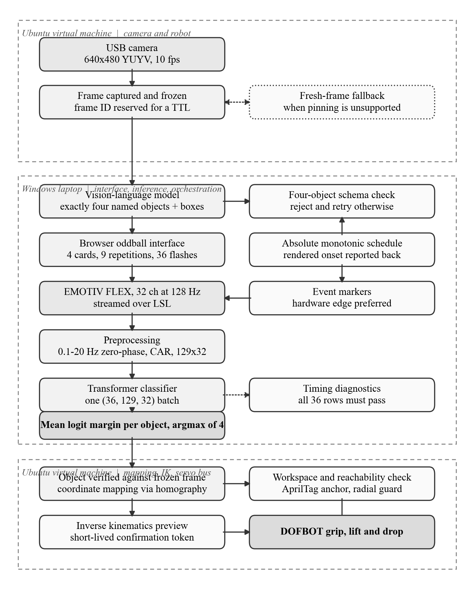

Research flagship
P300 EEG-BCI object selection
Transformer-based P300 evidence accumulation for selecting a camera-detected target before a robotic action path is prepared.
Open repositoryElectronic engineering · Malaysia
A project record across EEG-BCI research, robotics, computer vision, embedded systems and engineering design. The centrepiece is a P300-driven object-selection system that connects visual targets, neural evidence and robotic motion.
Engineering studies, laboratory work and system design.
View academic work02Every verified competition and invention record, with the strongest source visuals.
View 37 records03Speaking, competitions, service and programme involvement.
View experience04P300 decoding, vision-guided identity control and robotic object retrieval.
View flagship researchFlagship research
The FYP architecture is shown whole, rather than cropped into a decorative background. It is the reference point for the research, innovation and public code portfolio.

Public repositories
Research flagship
Transformer-based P300 evidence accumulation for selecting a camera-detected target before a robotic action path is prepared.
Open repositoryComputer vision
Open-vocabulary surgical-scene screening that groups prompts for bleeding and retained equipment review.
Open repositoryHuman intent
Webcam-based pupil-response scoring across flashed targets with interfaces for vision and robotic workflows.
Open repository